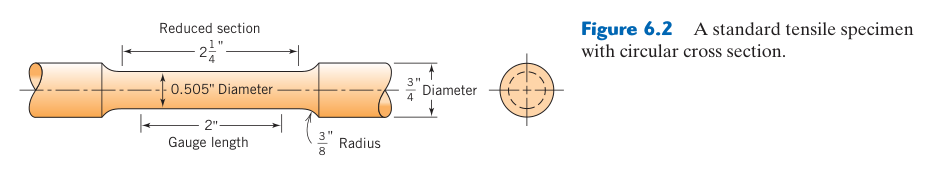
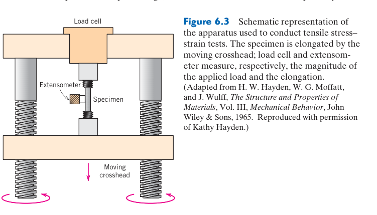
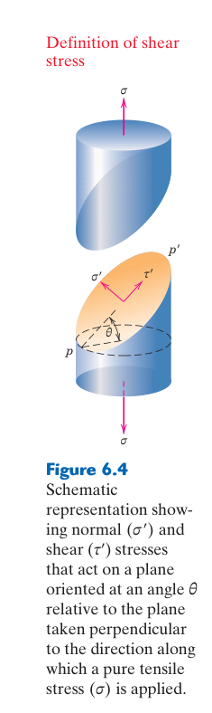
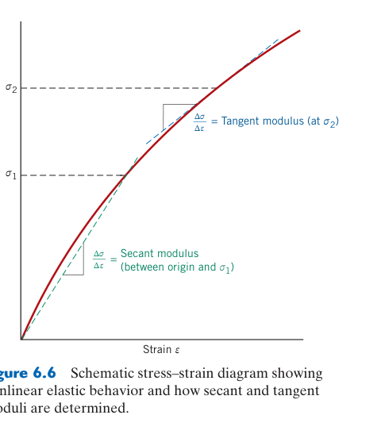
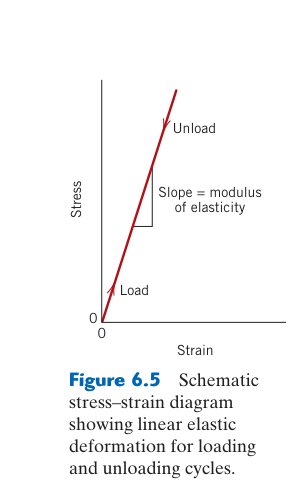
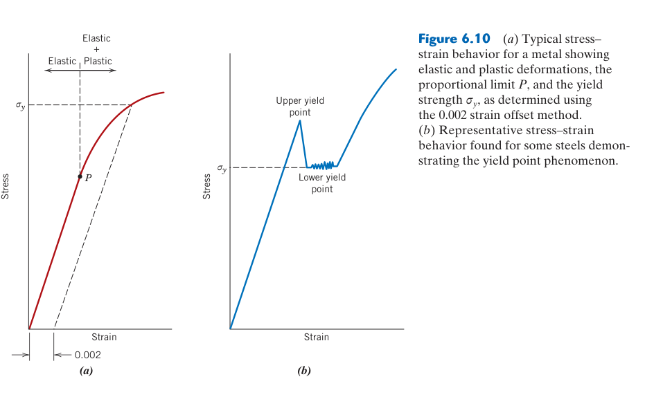
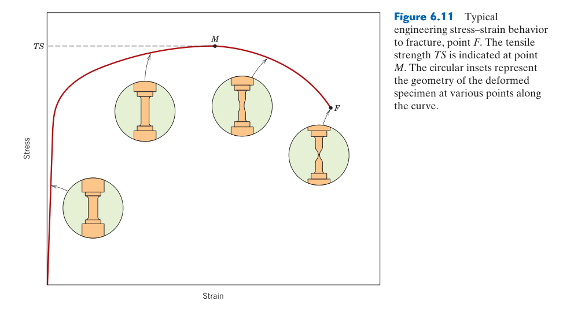
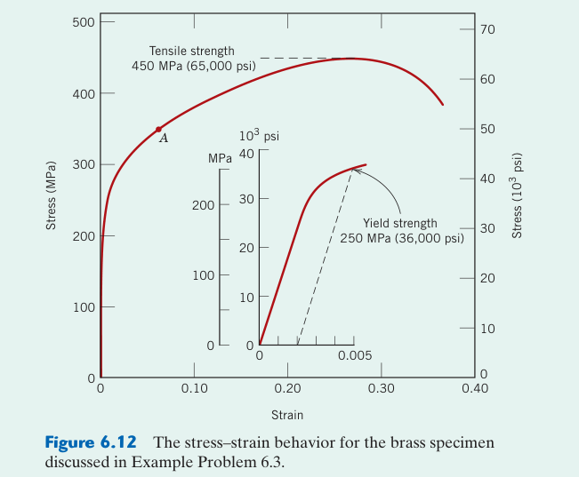

金屬的力學性質
本章預覽
📌 本章要解決的核心問題
為什麼有些金屬很強但很脆，有些很軟卻極具延性？工程師如何從拉伸試驗的一條曲線中讀出彈性模數、降伏強度、抗拉強度和延性？硬度和抗拉強度之間有什麼關係？本章建立工程力學的基礎詞彙——應力、應變、彈性、塑性、韌性——它們是後續所有機械設計和材料選擇的基礎。
🔑 關鍵概念
- 工程應力–應變：$\sigma = F/A_0$, $\epsilon = \Delta l/l_0$——基於原始尺寸
- Hooke 定律：$\sigma = E\epsilon$——彈性區的線性關係。$E$ 直接來自原子間鍵結的剛度
- 降伏強度 $\sigma_y$：塑性變形開始的應力——工程設計不可超越的紅線
- 抗拉強度 $TS$：工程應力曲線的最大值——頸縮開始點
- 延性：%EL（伸長率）和 %RA（斷面收縮率）
- 韌性：應力–應變曲線下的總面積——斷裂前吸收的能量
- 真實應力–應變：$\sigma_T = F/A_i$, $\epsilon_T = \ln(l_i/l_0)$——頸縮後更準確
- 硬度–強度關係：鋼的 $TS$ (MPa) ≈ 3.45 × HB
🧭 本章推理地圖
- 外力作用在試片上（§6.1）→ 以應力與應變正規化載荷和變形（§6.1–§6.2）→ 跨尺寸比較材料。
- 小應變只拉伸原子鍵且卸載可恢復（§6.3）→ 形成彈性區；斜率 $E$ 反映鍵結剛度（§6.3–§6.5）。
- 不可逆移動開始（§6.6）→ 材料降伏並塑性變形；拉伸曲線給出降伏、加工硬化與抗拉強度（§6.6–§6.7）。
- 局部截面縮小形成頸縮（§6.6）→ 工程應力下降而真應力仍可上升（§6.2、§6.7）→ 最終斷裂。
- 整合曲線與試驗條件（§6.6–§6.11）→ 分辨剛度、強度、延性與韌性 → 設定安全係數（§6.12）。
先備知識橋接
- Ch2：原子間鍵結與鍵結能–距離曲線——$E$ 反映 $r_0$ 處的曲率，鍵結愈強→$E$ 愈高
- Ch4：差排的基本概念——塑性變形來自差排移動，降伏是差排開始大量滑移的應力
- 基本物理：力、面積、壓力的關係。1 MPa = 10⁶ N/m² = 1 N/mm²
6.1 應力與應變的基本概念

外力、內力與應力
外力作用於試件後，材料內部以分布於截面上的內力維持平衡；應力就是內力除以面積的局部強度。拉伸試驗的 $\sigma=F/A_0$ 是截面上平均的名義正應力，只有在遠離夾具、孔洞、缺口且變形均勻時才近似局部狀態。幾何不連續處會產生應力集中，局部最大值可遠高於名義應力。
應力其實是張量
同一材料點可同時承受三個正應力與多個剪應力；在不同切面上，正、剪分量也會改變。單軸拉伸只是最容易量測的特殊情況。真實零件若承受彎曲、扭轉與內壓，需用主應力、最大剪應力或 von Mises 等效應力整理多軸狀態，再與相符的失效準則比較。
應變是相對變形
工程應變 $\epsilon=\Delta L/L_0$ 無因次，可用 mm/mm 或百分比表示。相同伸長量若發生在較短標距，代表更大的應變，因此報告延伸率時必須說明標距。軸向、橫向與剪應變共同描述局部形狀改變；應變規或數位影像相關量到的是特定位置，不一定等於夾頭位移除以標距。
工程應力 $\sigma = F/A_0$——施加的力除以試片原始截面積。單位：MPa（= N/mm² = 10⁶ N/m²）。注意：使用「原始面積」是為了計算簡便——在試驗過程中不需要持續量測試片的即時截面積。但頸縮開始後（超過 $TS$），實際截面積遠小於 $A_0$ → 工程應力低於真實應力（見 §6.7）。工程應變 $\epsilon = \Delta l/l_0 = (l_i - l_0)/l_0$——長度變化除以原始長度，無單位，常用百分比表示。$\epsilon = 0.01$ 即 1% 伸長。
三種基本變形模式：(1) 拉伸（tension）——外力拉長試片、截面縮小；(2) 壓縮（compression）——外力縮短試片、截面增大；(3) 剪切（shear）——平行面的相對滑動，$\tau = F/A_0$, $\gamma \approx \tan\theta$（剪切應變）。扭轉是剪切的一種重要形式——圓柱受扭矩時，橫截面上產生從中心到表面線性增加的剪切應力分布。傳動軸、彈簧、螺栓全部承受扭轉。
標準拉伸試片的兩端較粗（夾持區）、中間較細且截面均勻（標距區，gauge section）。這種形狀確保：(1) 斷裂發生在標距區內（而非夾持處的應力集中）；(2) 標距區內應力是均勻的單軸狀態；(3) 頸縮在標距區內自由發展。標距區到夾持端的過渡圓角（fillet）必須足夠大以最小化應力集中。
6.2 工程應力–應變 vs 真實應力–應變
工程量與真實量的差別
工程應力、應變始終以原始面積與標距計算，方便試驗標準化；真應力使用瞬時面積，真應變則累加每一小段相對伸長，$\epsilon_T=\ln(L/L_0)=\ln(1+\epsilon)$。均勻塑性變形且體積近似不變時，$\sigma_T=\sigma(1+\epsilon)$；頸縮後截面變形不均，不能再直接用此換算。
曲線上的各區域
初始直線斜率給彈性模數；偏離可逆彈性後進入降伏與塑性區；加工硬化使承載力持續增加；工程應力達最大值後開始明顯頸縮，最後斷裂。最大工程應力下降不代表材料局部變軟，因為快速縮小的截面使總荷重下降，頸縮區的真應力通常仍上升。
試驗系統也會變形
若直接以橫樑位移當試件伸長，量測會混入試驗機、夾具與接頭的順應性，造成模數偏低。彈性區應使用校正過的引伸計；大應變時可改用非接觸影像量測。試件偏心、夾持滑移與未對準會引入彎曲，使兩側應變不同，需在試驗前校正。
工程應力和應變使用原始尺寸定義——試片初始截面積 $A_0$ 和初始標距長度 $l_0$。這使得計算簡單（不需在試驗過程中持續量測），但在頸縮開始後會產生誤導——因為試片截面積在不斷縮小，而工程應力仍除以不變的 $A_0$ → 頸縮後工程應力下降，看起來像是材料「變弱了」。實際上材料仍在加工硬化——真實應力（基於瞬時面積 $A_i$）在頸縮後持續上升直到斷裂（§6.7）。
$l_0$ = 原始標距長度 · $l_i$ = 瞬時長度 · $\epsilon$ 常用 % 表示（$\epsilon \times 100\%$）
$\epsilon_T$ = 真實（對數）應變 · $\ln$ = 自然對數 · 使用瞬時尺寸 → 物理上更正確
失效：頸縮開始後，截面變形不均勻，不可再直接用此式換算——須量測頸部最小截面。
▶ 例：$\epsilon = 0.2$（20% 工程應變）→ $\epsilon_T = \ln(1.2) = 0.182$（小於工程應變）。
剪切應力與多軸載荷
除了拉伸和壓縮，工程中還需要理解多軸應力狀態。壓力容器壁同時承受周向和軸向拉伸（雙軸應力）。多軸應力下的降伏由降伏準則判定：Tresca 準則（最大剪切應力）——降伏發生在 $\tau_{\max} = \sigma_y/2$；von Mises 準則（畸變能）——降伏發生在等效應力 $\sigma_{eq} \ge \sigma_y$。von Mises 對延性金屬的預測通常比 Tresca 更準確。扭轉試驗的應力狀態為純剪切——這是測量剪切降伏強度的直接方法。
6.3 Hooke 定律與彈性模數

模數反映鍵結剛度
彈性模數與原子間位能曲線在平衡距離附近的曲率相關：鍵結越強、曲線越陡，微小拉伸所需應力越大。合金化與冷加工可大幅改變降伏強度，卻通常只小幅改變 $E$，因為它們主要阻礙差排而未根本改變平均鍵結剛度。溫度升高使有效曲率降低，因此模數通常下降。
線性、割線與切線模數
線彈性材料以直線斜率定義 $E$；鑄鐵、聚合物、複合材料或多孔材料的曲線可能從一開始就非線性，此時可指定應變範圍求割線模數，或求某點的切線模數。不同定義數值不同，資料表與設計計算必須使用相同方法與溫度、應變速率條件。
剛度不等於強度
剛度描述彈性變形多少，強度描述何時開始塑性流動或破壞。高強鋼與低碳鋼的 $E$ 都約 200 GPa，但降伏強度可相差數倍；玻璃纖維複材沿纖維方向可很硬，橫向卻較軟。零件撓度還強烈依賴截面幾何，例如樑的彎曲剛度為 $EI$，增加截面慣性矩常比換材料更有效。
在低應力下，大多數金屬表現線性彈性行為：$\sigma = E\epsilon$（Hooke 定律）。去除負載後變形完全回復——原子從平衡位置 $r_0$ 被拉開（鍵的伸長），但沒有永久位移（沒有差排移動）。$E$（Young's modulus，彈性模數）反映鍵結能–距離曲線在 $r_0$ 處的曲率（二階導數）——鍵結愈強 → 曲率愈大 → $E$ 愈高。因此 $E$ 主要取決於鍵結類型，與微觀結構（晶粒大小、差排密度、析出物）幾乎無關。鋼（~207 GPa，金屬鍵）和鋁（~69 GPa，金屬鍵較弱）的 $E$ 無法透過熱處理顯著改變——要提高剛性只能換材料或改變幾何形狀（$I$ 慣性矩）。
鋼：$E \approx 207$ GPa · 鋁：$E \approx 69$ GPa · 銅：$E \approx 110$ GPa · 鈦：$E \approx 107$ GPa
6.4 Poisson 比與彈性常數關係

卜松比與體積變化
單軸拉伸時材料通常橫向收縮，$\nu=-\epsilon_\text{trans}/\epsilon_\text{axial}$。三個方向的微小應變相加近似體積應變，因此 $\nu$ 接近 0.5 的材料在彈性變形時近乎不可壓縮；軟橡膠是典型例子。軟木的卜松比較低，受壓時不易向側面鼓出，適合作瓶塞。
各彈性常數的換算有前提
對均勻、各向同性、線彈性材料，$E=2G(1+\nu)$ 且 $E=3K(1-2\nu)$。若材料是單晶、層合複材、木材或具有方向性孔隙，兩個常數不足以描述完整行為，不能直接套用上述關係。此時需量測方向相依剛度矩陣，並清楚標示載荷與材料方向。
負卜松比材料
某些特殊晶格與內凹蜂巢結構受拉時反而橫向膨脹，稱為 auxetic 材料，$\nu<0$。它們不違反穩定性，但幾何單元的轉動與展開方式不同，可提升抗壓痕、能量吸收或曲面貼合能力。這提醒我們：巨觀彈性常數不只由化學組成決定，也可由微結構架構設計。
當材料沿 $z$ 軸拉伸（$\epsilon_z > 0$）時，橫向會收縮：$\epsilon_x = \epsilon_y = -\nu\epsilon_z$。Poisson 比 $\nu = -\epsilon_x/\epsilon_z$ 量化了這種橫向收縮。不同材料的 $\nu$ 值反映其變形行為：$\nu = 0$（軟木）——拉伸時不變細，體積直接增加。這就是為什麼軟木塞容易拔出（壓縮時不膨脹、拉伸時不收縮）。$\nu = 0.5$（橡膠、液體）——體積守恆，拉伸變細恰好補償長度增加。大多數金屬 $\nu \approx 0.3$——拉伸時體積略微增加。
負號表示：拉伸時橫向收縮（$\epsilon_z > 0 \Rightarrow \epsilon_x < 0$，因此 $\nu > 0$）
等向性材料有三個彈性常數——$E$（Young's modulus）、$G$（shear modulus）、$\nu$（Poisson's ratio）——但只有兩個是獨立的。已知任意兩個可計算第三個。對於大多數金屬（$\nu \approx 0.3$）：$G \approx 0.38E$。橡膠（$\nu \approx 0.5$）：$G \approx E/3$。軟木（$\nu \approx 0$）：$G = E/2$。
6.5 非彈性、比模數與彈性設計

非彈性仍可能完全恢復
理想彈性假設應力與應變同步，但真實材料常有時間延遲：載入後應變逐漸增加，卸載後又逐漸恢復，稱為非彈性或滯後彈性。它來自原子、缺陷或分子鏈重新排列，會在循環載荷中形成遲滯迴圈並耗散能量。若卸載後最終完全恢復，便不同於永久塑性變形。
彈性回復能與阻尼
線彈性材料單位體積儲存的能量為 $U_r=\sigma^2/(2E)$；到降伏前的最大值稱回復能模數，適合評估彈簧材料。高降伏強度能增加可儲能量，高模數反而使同應力下的彈性應變較小。阻尼材料的目的不同：它要把振動能轉成熱，因此重視遲滯面積而非完全回彈。
輕量化看比模數
重量受限設計常比較 $E/\rho$，但最佳指標取決於載荷模式：拉桿、樑與板的質量效率含有不同次方的 $E$ 與幾何尺度。碳纖維複材沿纖維方向比模數高，卻也有橫向、界面與衝擊弱點。材料指標只能初篩，最終仍需納入製程、接合、環境與失效模式。
非彈性（anelasticity）：理想彈性是瞬時的（施加應力→立即變形），但真實材料中存在時間依賴的彈性行為——變形和回復需要時間。在高分子中極其顯著（黏彈性，Ch15）；在金屬中通常可忽略，但在高阻尼應用（如機床底座需吸收振動）中，非彈性是被刻意利用的性質——鑄鐵因石墨片的內摩擦而有優異的阻尼能力。
比模數（specific modulus = $E/\rho$）是衡量「給定重量下的剛度」的指標。鋁、鋼、鈦三者幾乎相同（$E/\rho \approx 26$ MN·m/kg）——相同重量的結構，三者剛度差不多。鈹（$E/\rho \approx 164$）和碳纖維複合材料（$E/\rho \approx 80$–200）遠高於金屬——這就是為什麼衛星結構和高端自行車架使用這些材料。
改變結構剛度的三條路：(1) 換材料——鋁→鋼→碳化鎢→鑽石（$E$ 逐漸升高）；(2) 改變幾何形狀——I 形樑比相同截面積的矩形樑剛得多（慣性矩 $I$ 增加數十倍）；(3) 使用複合材料——碳纖維的 $E$ 可達 200–900 GPa，但密度僅鋼的 1/4。記住：$E$ 無法透過熱處理改變——這是材料選擇中最重要的限制之一。
所有力學性質中，$E$ 是最難改變的——它直接來自原子間的鍵結強度。鋼無論是退火態（軟）還是淬火態（硬），$E$ 幾乎相同（~207 GPa）。要改變結構的剛度，只有換材料、改幾何、或用複合材料三條路——不能靠熱處理。
6.6 拉伸性質——塑性變形
降伏強度如何定義
若曲線有明顯上、下降伏點，可直接報告；多數金屬沒有清楚轉折，常以 0.2% 偏移法：從 $\epsilon=0.002$ 處畫與彈性線平行的直線，其交點為偏移降伏強度。它是工程約定而非原子尺度突變；對聚合物或特殊規範可能採不同偏移量。
抗拉強度與延性指標
抗拉強度是最大工程應力，適合品質比較，但延性金屬通常在達到它時才開始頸縮，並非立即斷裂。延性可由斷後伸長率與斷面收縮率表示；前者受標距影響，後者較聚焦頸縮區。比較材料時必須使用相同試件尺寸、標距與試驗標準。
韌性是整條曲線的面積
韌性表示破壞前每單位體積吸收的能量，等於應力–應變曲線積分。高強但低延性的材料未必韌，高延性但應力很低也未必吸能多。拉伸韌性、缺口衝擊能與斷裂韌性量測的是不同情境，不能互相直接替代；缺口、溫度與載入速率會改變破壞機制。
試驗條件是結果的一部分
應變速率提高常使金屬與聚合物的流動應力上升、延性改變；溫度升高通常降低強度並增加延性，但也可能引發動態應變時效。材料方向、熱處理、表面狀態與試件厚度同樣重要。因此完整報告應包含材料批次、取樣方向、規格、環境與載入速率。
當應力超過彈性極限，材料開始塑性變形——差排大量移動（Ch7）。降伏強度 $\sigma_y$ 通常使用 0.2% 偏位法測定（從 $\epsilon = 0.002$ 處畫平行於彈性區的線，與曲線的交點）。抗拉強度 $TS$ 是工程應力曲線的最大值——在此點之後頸縮（necking）開始。頸縮條件（Considère 準則）：$d\sigma_T/d\epsilon_T = \sigma_T$。在 Hollomon 關係 $\sigma_T = K\epsilon_T^n$ 下，頸縮發生在 $\epsilon_T = n$（加工硬化指數 = 均勻應變）。
%RA 不受標距長度影響，比 %EL 更能反映真實延性
要提高 $U_r$：選高 $\sigma_y$ + 低 $E$ 的材料（彈簧設計核心）
延性：%EL = $(l_f-l_0)/l_0 \times 100$（伸長率），%RA = $(A_0-A_f)/A_0 \times 100$（斷面收縮率）。%RA 更能反映真正的延性——不受標距長度影響。脆性材料：%EL < 5%；延性金屬：40–60%。
韌性（toughness）= 應力–應變曲線下的總面積 = 單位體積材料在斷裂前吸收的能量（J/m³）。回彈模數 $U_r = \sigma_y^2/(2E)$——僅彈性變形時可吸收的能量。
📝 範例 6.1：拉伸性質計算
題目：鋼棒 $d_0=12.8$ mm, $l_0=50.8$ mm。最大負載 73.4 kN（頸縮），斷裂負載 62.0 kN。斷裂後 $l_f=66.0$ mm, $d_f=10.2$ mm。求 $TS$、%EL、%RA。
解：$A_0 = \pi(6.4)^2 = 128.7$ mm²。$TS = 73400/128.7 = 570$ MPa。%EL = $(66.0-50.8)/50.8 \times 100 = 29.9\%$。$A_f = \pi(5.1)^2 = 81.7$ mm²。%RA = $(128.7-81.7)/128.7 \times 100 = 36.5\%$。
韌性——強度與延性的乘積
韌性（toughness）是材料在斷裂前吸收能量的能力——它是應力–應變曲線下的總面積：$U_T = \int_0^{\epsilon_f} \sigma d\epsilon$（單位 J/m³）。高韌性需要同時具備高強度（曲線高）和高延性（曲線長）。一個極強但脆的材料（如玻璃，$TS$ 可達數 GPa 但 $\epsilon_f < 0.1\%$）韌性很低——幾乎不吸收能量就斷裂。一個極軟但極延的材料（如純鉛，$\sigma_y \approx 10$ MPa 但 %EL > 50%）韌性也不高——吸收的能量有限（曲線太低）。最佳組合：中高強度 + 良好延性——例如調質鋼（淬火+回火）和鈦合金。
回彈模數 $U_r = \sigma_y^2/(2E)$ 是僅在彈性範圍內可吸收的能量——對彈簧設計至關重要。要提高回彈模數，應選擇高 $\sigma_y$ 和低 $E$ 的材料（高強度+高彈性應變）。這就是為什麼鐘錶發條使用高碳鋼（高 $\sigma_y$）而非鋁（低 $\sigma_y$）——雖然鋼的 $E$ 更高，但 $\sigma_y^2$ 的貢獻遠大於 $E$ 的增加。
靜態拉伸曲線下的面積是「靜態韌性」，但實際服役中材料常承受衝擊（動態載荷）——此時需要「動態韌性」。 Charpy V-notch 試驗是標準方法：在試片上加工 V 形缺口（應力集中點）→ 擺錘撞擊 → 量測試片斷裂吸收的能量（J）。關鍵發現：BCC 金屬（鋼）在低於 DBTT 時，衝擊吸收能從 >100 J 驟降至 <10 J——韌脆轉變（Ch8）。FCC 金屬（鋁、沃斯田鐵不銹鋼）則無此轉變。
6.7 真實應力與真實應變
真應力–真應變揭示加工硬化
均勻塑性區常以 Hollomon 式 $\sigma_T=K\epsilon_T^n$ 擬合，其中 $K$ 是強度係數，$n$ 是加工硬化指數。$n$ 越大，材料越能在局部變薄後提高流動應力、延緩變形集中，因此板材成形性通常較佳。擬合時應使用真塑性應變，即扣除彈性部分。
頸縮的 Considère 條件
拉伸中截面縮小降低承載面積，加工硬化則提高材料流動應力；當硬化增量恰好無法補償面積減少時，均勻變形失穩並開始頸縮，條件為 $d\sigma_T/d\epsilon_T=\sigma_T$。對 Hollomon 材料，均勻真應變近似等於 $n$，建立加工硬化與均勻延伸率的直接連結。
頸縮後不能只靠簡單換算
頸縮區具有多軸應力且截面沿軸向不均勻，$\sigma_T=F/A$ 雖可用最小瞬時面積估算平均值，仍未修正應力三軸度。精確流動曲線需量測局部輪廓並採 Bridgman 修正、數位影像相關或反算有限元素。把工程曲線下降段直接轉換會低估材料的真實硬化。
為什麼需要真實應力–應變？因為工程應力–應變在頸縮後給出的信息是誤導的——$TS$ 之後的下降只是幾何效應（$A_0$ 不更新），材料本身仍在加工硬化。真實應力 $\sigma_T = F/A_i$ 使用瞬時面積，因此頸縮後仍持續上升直到斷裂。
真實應變的數學形式 $\epsilon_T = \ln(l_i/l_0)$ 來自對瞬時長度的積分：$d\epsilon_T = dl/l$，積分得 $\epsilon_T = \ln(l/l_0)$。這個定義賦予真實應變一個工程應變缺少的性質：可加性。若先拉伸 50%（$l_0 \to 1.5l_0$）再拉伸 50%（$1.5l_0 \to 2.25l_0$），總工程應變 = $(2.25-1)/1 = 125\%$——不是 50%+50%=100%。但總真實應變 = $\ln(1.5) + \ln(1.5) = \ln(2.25) = 0.811$——可完美疊加。
$n$ = 加工硬化指數：$n \approx 0.1$–0.2（高強鋼、鋁合金 → 頸縮早）；$n \approx 0.4$–0.5（退火銅、不銹鋼 → 頸縮晚）
對 Hollomon 材料：$\epsilon_T = n$ 時發生頸縮 → $n$ = 均勻真應變
在均勻變形區（頸縮前），Hollomon 方程式 $\sigma_T = K\epsilon_T^n$ 是一個優秀的經驗擬合。$n$（加工硬化指數）的物理意義：它等於頸縮開始時的真實應變（$\epsilon_T = n$）。$n \approx 0.1$–0.2（高強度鋼、鋁合金——頸縮早）→ 均勻變形量小；$n \approx 0.4$–0.5（退火銅、沃斯田鐵不銹鋼——頸縮晚）→ 均勻變形量大。$n$ 值對深拉（deep drawing）和拉伸成形至關重要——$n$ 太小 → 局部變薄 → 破裂。
📝 自編概念例：從拉伸曲線反推 Hollomon 參數
題目：某金屬在均勻變形區兩個點的數據：$\epsilon_T=0.1$ 時 $\sigma_T=400$ MPa；$\epsilon_T=0.2$ 時 $\sigma_T=500$ MPa。求 $K$ 和 $n$。
解：$\ln\sigma_T = \ln K + n\ln\epsilon_T$。兩點代入：$\ln 400 = \ln K + n\ln 0.1$；$\ln 500 = \ln K + n\ln 0.2$。相減：$\ln(500/400) = n\ln(0.2/0.1)$ → $0.223 = n \times 0.693$ → $n = 0.32$。代回：$\ln K = \ln 400 - 0.32\ln 0.1 = 5.99 + 0.74 = 6.73$ → $K = 837$ MPa。
預測：頸縮發生在 $\epsilon_T = n = 0.32$（對應 %EL ≈ $\exp(0.32)-1 = 38\%$ 均勻伸長）。$n=0.32$ 屬於中等加工硬化能力——適合中等深拉成形。
6.8 卸載後的彈性回復（Elastic Recovery After Plastic Deformation）




卸載路徑與永久應變
塑性區卸載時，曲線近似沿斜率 $E$ 返回；可恢復部分是彈性應變，與應力除以模數同階，剩餘截距為永久塑性應變。高強度、低模數材料的彈性回復比例較大，因此鈦合金與高強鋼板成形後的回彈往往比低強鋼明顯。
回彈與殘留應力
彎曲時外側受拉、內側受壓，中間區可能仍保持彈性。卸載後各層想恢復的程度不同，造成曲率改變與自平衡殘留應力。模具補償可採過彎、壓底、拉伸彎曲或數值預測；若只用單軸降伏強度而忽略加工硬化與各向異性，回彈估算容易偏差。
Bauschinger 效應
材料先向一方向塑性變形後，反向載入的降伏強度可能下降，稱 Bauschinger 效應。它與差排結構造成的背應力有關，對反覆彎曲、矯直與循環載荷很重要。單純各向同性硬化模型只讓降伏面均勻擴大，無法描述此現象；運動硬化模型則允許降伏面平移。
當材料經歷塑性變形後卸載（移除外力），彈性應變部分會回復，但塑性應變部分永久保留。在應力–應變曲線（圖 6.6）上，卸載路徑是一條與初始彈性段平行的直線（斜率 = 彈性模數 $E$，因為卸載是純彈性過程）。永久應變 $\epsilon_p$ 的計算：$\epsilon_p = \epsilon_{\text{total}} - \epsilon_{\text{elastic}}$，其中 $\epsilon_{\text{elastic}} = \sigma/E$（卸載時的應力除以彈性模數）。
這個看似簡單的概念有一個極其重要的工程後果：殘留應力（residual stress）。當一個構件（例如彎曲的樑或軋延的板）經歷不均勻的塑性變形——某些區域的永久應變大於其他區域——卸載後，高應變區域「想」保持較大尺寸、低應變區域「想」保持較小尺寸，兩者互相約束 → 產生自平衡的內應力場。殘留應力可以是拉伸（危險——促進疲勞裂紋和應力腐蝕）或壓縮（有益——提高疲勞壽命，如噴丸 shot peening、表面滾壓）。
將金屬板彎曲後釋放——它會回彈（springback）一點點。這是因為彎曲時外側纖維拉伸降伏、內側壓縮降伏，中間某處存在彈性核心（未降伏）。卸載時彈性核心回復原狀，帶動整個截面回彈。模具設計必須預留回彈補償——將模具角度做得比目標角度「過彎」一些。高強度鋼的回彈（>屈服強度/E）比低碳鋼大得多——這是高強鋼成形的核心挑戰。
6.9 壓縮、剪切與扭轉試驗
壓縮試驗的摩擦與鼓肚
理想單軸壓縮需要端面自由橫向擴展，但壓板摩擦限制端部變形，使圓柱試件形成鼓肚並產生三軸應力。潤滑、適當高徑比與平行端面可減少誤差；試件太細長又可能屈曲。脆性材料常用壓縮試驗，因夾持容易且不會像拉伸那樣被微小表面裂紋立即拉開。
剪切與扭轉的關係
純剪切中 $\tau=G\gamma$；圓軸扭轉時，剪應力從中心零值線性增加至表面最大值，$\tau(r)=Tr/J$，扭轉角與 $TL/(GJ)$ 成正比。這些式子假設線彈性、圓截面與小變形；非圓截面會翹曲，塑性扭轉後分布也不再線性。
多軸降伏的等效化
延性金屬的塑性流動主要由偏差應力而非靜水壓力控制。von Mises 準則把多軸狀態換成等效應力，達單軸降伏強度時預測降伏；Tresca 準則使用最大剪應力，通常稍保守。脆性材料對最大主拉應力與靜水壓較敏感，不能盲目沿用延性金屬準則。
迄今為止的討論集中在拉伸試驗——但工程構件承受的載荷遠不止拉伸。三種重要的其他載荷模式：
壓縮試驗（compression test）——施加單軸壓縮力。試樣通常為短圓柱（高度/直徑 ≈ 1.5–2.0，避免挫曲 buckling）。壓縮應力 $\sigma_c = F/A_0$，壓縮應變 $\epsilon_c = (h_0-h)/h_0$。脆性材料（陶瓷、鑄鐵、混凝土）的壓縮強度顯著高於拉伸強度——因為拉伸時裂紋在垂直於載荷方向張開（模式 I），而壓縮時裂紋趨向閉合（或沿傾斜面剪切破壞）。鑄鐵的 $\sigma_{c,\text{UTS}}/\sigma_{t,\text{UTS}} \approx 3$–5；混凝土可達 ~10。這就是為什麼拱橋和穹頂用磚石和混凝土——只受壓。
剪切試驗（shear test）——施加平行於平面的力。剪切應力 $\tau = F/A_0$，剪切應變 $\gamma = \tan\theta \approx \Delta x/y_0$（對於小變形）。剪切試驗用於測定：鉚釘和螺栓的剪切強度、複材層間（interlaminar）剪切強度、黏合劑的搭接（lap shear）強度。注意：延性金屬的剪切降伏強度約為拉伸降伏強度的 0.577 倍（von Mises 準則，§7.4）：$\tau_y \approx \sigma_y/\sqrt{3}$。
剪切應力沿半徑線性分布：中心為零、表面最大
剪切應變：$\gamma = r\phi/L$（$\phi$ = 扭轉角，rad）
扭轉試驗（torsion test）——旋轉圓柱。扭轉施加的是純剪切（垂直於半徑方向的圓周剪切應力），且剪切應力沿半徑線性變化——表面最大、中心為零。最大表面剪切應力：$\tau_{\text{max}} = Tr/J$，其中 $T$ = 扭矩（torque），$r$ = 試樣半徑，$J = \pi r^4/2$（極慣性矩）。扭轉剪切應變：$\gamma = r\phi/L$，$\phi$ = 扭轉角。扭轉試驗特別適合高延性材料——不像拉伸試驗有頸縮不穩定性，扭轉可以在極大應變下仍保持穩定。用於測定剪切模數 $G$（$G = \tau/\gamma$）、彈簧材料、傳動軸的設計。
初學者常只問「拉伸強度多少」，但實際構件可能不以拉伸破壞——齒輪以接觸疲勞（Hertz 應力）、傳動軸以扭轉疲勞、混凝土柱以壓碎、鉚釘以剪切。材料選擇必須考慮實際服役載荷模式——單純看拉伸強度會誤導整個設計。
6.10 硬度（Hardness）
硬度量的是局部塑性抗力
壓頭下方同時存在壓縮、剪切與拘束，硬度不是基本材料常數，而是特定壓頭、荷重與時間下的比較值。金屬硬度常與抗拉強度相關，因兩者都受塑性流動阻力控制，但換算係數依材料與加工硬化而變；對陶瓷、鑄鐵、冷加工材料或鍍層尤其不能套用通用公式。
如何選硬度尺度
Rockwell 快速、直接讀值，適合量產；Brinell 壓痕大，可平均粗大或不均勻組織；Vickers 以幾何相似的金字塔壓頭涵蓋廣荷重；Knoop 的淺長壓痕適合脆薄層。選擇時要讓壓痕足夠大以代表微結構，又足夠小以避免基材、邊界或相鄰壓痕影響。
壓痕尺寸效應與製樣
微小荷重下硬度可能隨壓痕尺寸改變，原因包括幾何必需差排、表面加工硬化、粗糙度與量測解析度。表面需平整、厚度足夠，壓痕中心通常應離邊緣與其他壓痕數倍對角線距離。測鍍層或滲碳層時應做深度剖面並控制壓痕深度，否則讀值會混入基材。
硬度試驗是材料測試中最實用的方法——比拉伸試驗更快、更便宜、接近非破壞性（僅留下一個小壓痕，不破壞零件）。但硬度不是一個「基本」力學性質——它測量的是材料對壓痕（局部塑性變形）的抵抗，應力狀態是複雜的三軸壓縮，與拉伸試驗的單軸拉伸完全不同。
永遠查閱 ASTM E140 換算表，不可跨材料族套用。
四大 硬度試驗的選擇邏輯：Brinell（HB）——10 mm 鋼球或碳化鎢球，3000 kg 負載。壓痕大（~2–6 mm），適合鑄造和鍛造等宏觀不均勻材料（平均掉局部變化）。常用於鋼鐵和鑄造鋁合金的進料檢驗。Rockwell（HRB, HRC）——多種壓頭/負載組合，直讀硬度值（不需量測壓痕），最快速的常規檢測。HRC（鑽石錐，150 kg）用於硬化鋼；HRB（1/16" 球，100 kg）用於軟鋼和有色金屬。Vickers（HV）——鑽石方錐，負載範圍極廣（1 g–100 kg），顯微硬度——可測量單一晶粒、薄層、或析出物的硬度。壓痕永久對角線需顯微鏡量測。Knoop（HK）——長菱錐，壓痕淺而長——特別適合脆性材料（陶瓷）和薄塗層（不會穿透塗層）。
硬度–強度轉換的陷阱：鋼的 $TS \approx 3.45 \times$ HB 非常有用——你可以從一個快速非破壞性硬度測試估算拉伸強度。但這個關係僅對鋼成立（且對冷加工鋼需要修正係數）。鑄鐵（石墨片相當於內缺口→拉伸強度低於硬度預測）、鋁合金、鈦合金各有自己的換算關係。永遠查閱材料專屬的換算表（ASTM E140），不要盲目套用鋼的公式。
壓頭下方形成一個塑性變形區，周圍被彈性變形區包圍。卸載時，彈性區回彈，擠壓塑性區——這導致壓痕在卸載後略微變小（彈性回復）。硬度值反映的是塑性流動應力，約等於產生 ~8% 塑性應變所需的真實應力（Tabor 的經典分析）。這就是為什麼硬度與 $TS$（而非 $\sigma_y$）相關性更好——$TS$ 也涉及大量塑性變形。
6.11 材料性質的變異性與統計本質
變異可能來自材料，也可能來自量測
同批試件的差異可能來自成分、孔隙、晶粒、表面缺陷或取樣方向，也可能來自機台校正、操作者與環境。重複量測同一試件主要估計量測重複性，量測多個不同位置與試件才包含材料不均勻性；兩者若未分開，改善製程時容易找錯原因。
平均值之外至少看標準差
平均值描述中心，標準差描述離散；變異係數 $CV=s/\bar{x}$ 方便比較不同量級，但平均接近零時不適用。樣本平均的信賴區間反映估計不確定度，並不表示指定比例的個別產品都落在其中。規格合格率應根據個體分布與製程能力，而非只看平均值是否在規格內。
分布模型需配合破壞機制
尺寸與加工誤差常可近似常態分布；由最嚴重缺陷控制的脆性強度常用 Weibull 分布，受測體積越大，包含致命缺陷的機率越高。選模型前應看直方圖、機率圖與物理機制。少量離群值不能因「不好看」就刪除，應先查明製樣、量測或真實異常來源並留下紀錄。
材料性質不是單一值——即使同一爐鋼、同一批熱處理，不同試片的降伏強度也有變異。變異的來源包括：成分的微觀偏析（鑄錠不同部位的合金元素含量略有差異）、晶粒大小分布（不同位置的晶粒不可能完全均勻）、表面品質（加工刀痕、脫碳層深度不一）、以及試驗誤差。因此安全的工程設計不能使用「平均強度」——必須使用統計下限。
航太材料的統計基礎：A-basis（99% 信心水準下 95% 母體超過的值）——用於關鍵結構（機翼主樑、起落架）。需要至少 100 個試片的統計數據。B-basis（95% 信心水準下 90% 母體超過的值）——用於次要結構。需要至少 30 個試片。這些統計下限遠低於算術平均值——例如 7075-T6 板材的平均 $\sigma_y$ 約 500 MPa，但 A-basis 可能僅 ~430 MPa（變異係數 ~5–8%）。
現代設計趨勢是從單一安全係數轉向可靠度設計（reliability-based design）：分別量化材料強度的統計分布（平均值 + 標準差）和服役負載的統計分布，計算失效機率，確保其低於可接受值（如航空關鍵件要求失效機率 <10⁻⁹/飛行小時）。
6.12 安全係數——不同產業的取捨
安全係數吸收哪些未知
安全係數不只是把強度除以固定數字；它用來涵蓋載荷波動、材料散布、尺寸公差、模型誤差、環境劣化與失效後果。若這些因素已用機率模型或分項係數明確處理，再疊加過大的總安全係數可能造成不必要重量；若資料不足或後果嚴重，則需更保守。
基準強度必須對應失效模式
延性零件防永久變形常以降伏強度為基準；脆性材料可能以斷裂強度或 Weibull 設計值；循環載荷要用疲勞資料；高溫長期載荷需用潛變破裂強度。把抗拉強度一律當容許值，會忽略零件可能在遠低於抗拉強度時因疲勞、屈曲、腐蝕或裂紋擴展失效。
可靠度設計的基本流程
先定義極限狀態，再建立載荷效應 $S$ 與抗力 $R$ 的分布；失效發生於 $S>R$。設計目標是讓兩分布重疊機率低於可接受值，而非保證「絕不失效」。敏感度分析可找出最值得降低的不確定性，例如改善材料檢驗、限制缺陷尺寸或監測實際載荷，往往比一味增加截面更有效。
不同產業：航太 $N \approx 1.2$–1.5 · 壓力容器 $N \approx 3.5$–4 · 建築 $N \approx 2$–5 · 電梯纜繩 $N \approx 10$–12
安全工作應力 $\sigma_w = \sigma_y/N$，$N$ 為安全係數。$N$ 的大小反映設計的不確定性——不確定性愈高，$N$ 愈大。不同產業的安全係數差異巨大，反映對不確定性的不同容忍度：電梯纜繩 $N \approx 10$–12（人命攸關 + 磨損 + 檢測困難）；壓力容器 $N \approx 3.5$–4（爆炸後果嚴重）；航太結構 $N \approx 1.2$–1.5（材料經嚴格檢驗 + 負載精確分析 + 定期無損檢測 + 重量極其昂貴）；建築 $N \approx 2$–5（負載不確定性大——地震、風載、使用方式變更）。
大多數工程設計基於降伏強度——一旦屈服，零件發生永久變形，功能喪失。只有在爆破盤等特定應用才用到 $TS$。初學者常見錯誤：用 $TS$ 算安全係數 → 零件可能因過度變形而失效。
過大的安全係數導致過度設計——增加重量（航太每多 1 kg 成本數萬美元）、增加材料消耗、可能反而引入新問題（重型結構的地震反應更大）。最佳設計是在充分理解負載和材料統計特性後，選擇最小可接受的安全係數。盲目增加 $N$ 是工程判斷力不足的表現——不是「更保守」，而是「更不了解」。
應力–應變曲線的宏觀詮釋——從曲線形狀讀出材料故事
一條應力–應變曲線可以講述整個材料的「性格」：高窄型（高 $TS$、低 %EL）——高強度鋼、工具鋼。堅硬但缺乏延性預警，斷裂前幾乎無塑性變形。用於切削工具和彈簧。低長型（低 $\sigma_y$、高 %EL）——退火純金屬（純銅、純鋁）。極軟、極易成形但強度低。用於深拉零件和導線。中間隆起型（中等 $TS$、中等 %EL、明顯降伏點）——低碳鋼。降伏後出現降伏點伸長（Lüders 帶傳播），曲線上有明顯的上下降伏點。這來自碳原子對差排的釘紮效應（Cottrell 氣團）。無明顯降伏型——鋁合金、銅合金、沃斯田鐵不銹鋼。從彈性平滑過渡到塑性，無明顯降伏點——必須用 0.2% offset 法定義 $\sigma_y$。
這些差異的根源在於差排行為（Ch7）：降伏點現象需要間隙溶質原子釘紮差排（低碳鋼中的碳）；FCC 金屬沒有降伏點是因為差排一開始就可以自由移動；加工硬化率（曲線斜率）反映了差排密度隨應變的增長速率。
📝 自編概念例：從應力–應變曲線反推材料類型
情境：你拿到一條未知材料的拉伸曲線。特徵：$E \approx 200$ GPa，有明顯上下降伏點（上降伏 350 MPa，下降伏 300 MPa），降伏平台延伸約 3% 應變，之後應力上升至 $TS = 550$ MPa，%EL = 25%。
診斷：(1) $E = 200$ GPa → 鋼（鐵基材料）。(2) 有降伏點現象 → 低碳鋼（碳釘紮差排）。(3) $TS = 550$ MPa → 估計碳含量 ~0.2–0.3 wt%（對照 AISI 1020–1030）。(4) %EL = 25% → 良好延性，適合冷成形。這是典型的熱軋低碳結構鋼——用於建築型鋼和管線。
補強專題：硬度試驗怎麼選？換算值為何不能當真值？
| 方法 | 壓頭／量測 | 適合情境 | 主要限制 |
|---|---|---|---|
| Brinell | 硬球；量壓痕直徑 | 鑄鐵、鍛件、組織較粗材料 | 壓痕大，不適合薄件或成品表面 |
| Rockwell | 金剛石圓錐或硬球；量深度 | 快速品管、大量金屬零件 | 需選對標尺；薄件與曲面易失真 |
| Vickers | 金剛石四角錐；量對角線 | 從微硬度到一般硬度、薄層 | 表面需平整，量測較慢 |
| Knoop | 細長菱形壓頭 | 脆性材料、塗層、極薄區域 | 方向性與表面製備影響明顯 |
試片厚度通常應足以避免基材或背面影響，壓痕中心也要遠離邊緣與其他壓痕。若量測滲碳層或塗層，應降低載荷並報告載荷、保持時間、量測位置與方法，單寫「硬度 700」沒有可重現性。
公式使用契約：工程應力與真實應力
| 公式 | 成立條件 | 不可直接使用的情況 |
|---|---|---|
| $\sigma_T=\sigma(1+\epsilon)$ | 均勻變形、體積近似不變 | 頸縮開始後，局部截面不再由整體伸長決定 |
| $\epsilon_T=\ln(1+\epsilon)$ | 量測長度內變形均勻 | 局部頸縮區需直接量測瞬時尺寸 |
| $E=\sigma/\epsilon$ | 線性彈性區、小應變 | 降伏後或明顯非線性材料 |
頸縮後若要取得可信的真實應力，應以頸部瞬時最小截面計算，並在高精度分析中考慮三軸應力狀態修正；不能把均勻變形公式一路套到斷裂。
本章摘要
力學性質核心參數對照表
| 參數 | 定義 | 公式/測定 | 工程意義 |
|---|---|---|---|
| 彈性模數 $E$ | 抵抗彈性變形的剛度 | $\sigma = E\epsilon$（Hooke 定律） | 來自鍵結剛度；無法熱處理改變 |
| 降伏強度 $\sigma_y$ | 塑性變形起始應力 | 0.2% offset 法 | 設計基準——超過即永久變形 |
| 抗拉強度 $TS$ | 工程應力最大值 | $F_{\max}/A_0$ | 頸縮起始點；非斷裂點 |
| 延性 %EL | 斷裂前塑性伸長量 | $(l_f-l_0)/l_0 \times 100$ | >5% 為延性；取決於標距 |
| 斷面收縮率 %RA | 頸縮處截面縮小量 | $(A_0-A_f)/A_0 \times 100$ | 比 %EL 更能反映真實延性 |
| 韌性 | 斷裂前吸收的總能量 | $\int_0^{\epsilon_f} \sigma d\epsilon$（曲線下面積） | 同時考量強度和延性 |
| 真實應力 $\sigma_T$ | 基於瞬時面積 | $F/A_i$ | 頸縮後仍上升；$\sigma_T = K\epsilon_T^n$ |
| 加工硬化指數 $n$ | 均勻變形能力 | $\epsilon_T = n$ 時頸縮 | $n$ 愈大→均勻變形量愈大 |
| Brinell 硬度 HB | 抵抗壓痕 | 鋼球壓頭，測壓痕直徑 | 鋼：$TS$(MPa) ≈ 3.45×HB |
| 安全係數 $N$ | 設計餘裕 | $\sigma_w = \sigma_y/N$ | 航空 1.2–1.5；建築 2–5 |
- 應力–應變曲線 = 材料的身分證：斜率 ($E$)、高度 ($TS$)、長度 (延性)、面積 (韌性)——全部資訊在一條曲線上。
- $E$ 無法透過加工改變：來自原子間鍵結的剛度，與微觀結構幾乎無關。要提高剛性只能換材料。
- 設計基於 $\sigma_y$，不是 $TS$：零件永久變形即功能失效——降伏是真正的工程極限。
- 硬度 ≈ 強度（對金屬）：快速、便宜、接近非破壞性——但適用範圍有限制。
📝 概念診斷題
- 兩個拉伸試片具有完全相同的化學成分和熱處理，但試片 A 的標距長度為 50 mm，試片 B 為 25 mm。兩者測得的 %EL 是否相同？如果不問，哪個更大？為什麼？提示：頸縮後的局部變形集中在頸縮區，與標距無關。
- 一個設計工程師需要選一種材料用於彈簧——要求能承受大變形但完全回復。應優先考慮哪個力學參數：$\sigma_y$、$TS$、還是 $U_r$（回彈模數）？$U_r$ 的公式是什麼？
- 真實應力–應變曲線在頸縮後仍持續上升，但工程應力–應變曲線在 $TS$ 後下降。這是否意味著材料在頸縮後「變弱」了？解釋這個表面矛盾。
- 兩個鋼試片：A 的硬度為 200 HB，B 為 400 HB。估算它們的 $TS$。如果 A 的 %RA = 60%，B 的 %RA = 20%，哪個更韌？
- 為什麼 硬度試驗不能直接給出「真正的」降伏強度，而需要依賴經驗關係（如鋼的 $TS \approx 3.45 \times$ HB）？提示： 硬度試驗的應力狀態（三軸壓縮）與拉伸試驗（單軸拉伸）的差異。
⚠️ 初學者常見錯誤
錯。$TS$ 是工程應力最大值（頸縮開始時）。斷裂時的工程應力低於 $TS$。
錯。陶瓷極硬但抗拉強度低（脆性斷裂發生在降伏之前）。硬度–強度對應關係僅對金屬成立。
錯。$E$ 是鍵結性質決定的，幾乎不受微觀結構影響。要提高鋼的剛性，只能換材料（如改為碳化鎢），不能靠熱處理。
不全對。過大的安全係數導致過度設計——增加重量（航太每多 1 kg 成本數萬美元）、增加材料消耗、可能反而引入新問題（重型結構的地震反應更大）。最佳設計是在充分理解負載和材料統計特性後，選擇最小可接受的安全係數。盲目增加 $N$ 是工程判斷力不足的表現。
📚 延伸資源
- Dieter, G.E., Mechanical Metallurgy — 力學性質與塑性變形的經典教科書，對 Hollomon 方程式和頸縮理論有深入處理
- ASTM E8/E8M: Standard Test Methods for Tension Testing of Metallic Materials — 拉伸試驗的標準操作規範
- ASTM E140: Standard Hardness Conversion Tables — 各硬度尺度之間的換算表
- 下一章預告：第 7 章：差排與強化機制——四大強化機制如何從微觀層面提高金屬的降伏強度